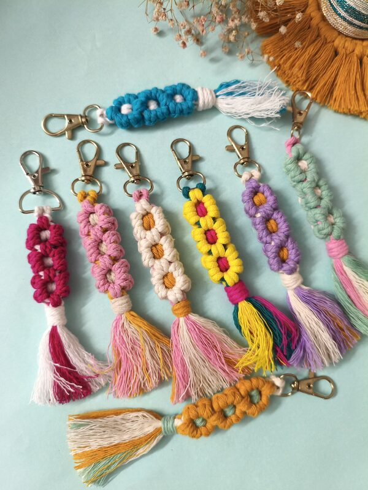

Behind the Knots
Our Process
Every macrame piece is a labor of love, crafted with intention and respect for our planet. Discover how we create art that lasts.
Step One
Material Sourcing
We believe that sustainable craft begins with responsible material choices. Every cord and fiber in our studio is carefully sourced from suppliers who share our commitment to the environment. We work exclusively with eco-friendly, biodegradable cotton, jute, and natural plant-based materials.
Our suppliers prioritize fair trade practices and ethical production. We support artisans and farmers who respect both people and the planet. No synthetic dyes, no microplastics, no harm—just pure, natural materials that will return to the earth.
Quality over quantity. Sustainability over speed.


Step Two
Design & Planning
Every piece begins as an idea, sketched and reimagined until it's perfect. We study traditional macrame techniques while exploring contemporary design possibilities. Our designs balance geometric precision with organic flow.
Before we begin knotting, we create detailed plans that map out every knot pattern, color arrangement, and structural element. We consider how light will play across the piece, how it will move and breathe, and how it will age gracefully over years.
We draw inspiration from nature, architecture, and the stories you share with us. Each design is thoughtful, intentional, and crafted to be timeless.
Step Three
Hand Knotting
This is where the magic happens. Our hands tie every single knot with precision, intention, and care. No machines. No shortcuts. Just the ancient art of macrame, practiced with modern artistry.
The rhythm of knotting is meditative. It requires focus, patience, and an intimate understanding of how fibers behave and materials flow. We spend hours on each piece, sometimes days or weeks, ensuring that every knot is secure, even, and beautiful.
We knot with precision because we believe our craft deserves that dedication. Your piece isn't just made — it's lovingly created by Monika and her team, right here in our Pune studio, with hands that care and hearts that pour into every single knot.


Step Four
Quality & Packaging
Before your piece leaves our hands, we inspect it thoroughly. Every knot is examined, every edge is finished with care, and we ensure that it meets our exacting standards. We only send out pieces we're proud of.
We package your macrame thoughtfully, protecting it during transit while keeping our packaging sustainable. We use recyclable and minimal packaging materials—no unnecessary plastic, no excess waste. Your piece arrives ready to be displayed or worn, with care instructions included.
We stand behind every piece we create. If you have any concerns, we're here to help. Your satisfaction is as important to us as the craft itself.
Our Sustainability Commitment
Every piece of Macrame Matrix is created with deep respect for our planet. We choose sustainable materials, minimize waste, support fair trade, and create pieces designed to last a lifetime. When your macrame eventually reaches the end of its life, it will biodegrade naturally, returning to the earth without harm.
We don't just make beautiful things. We make them responsibly.